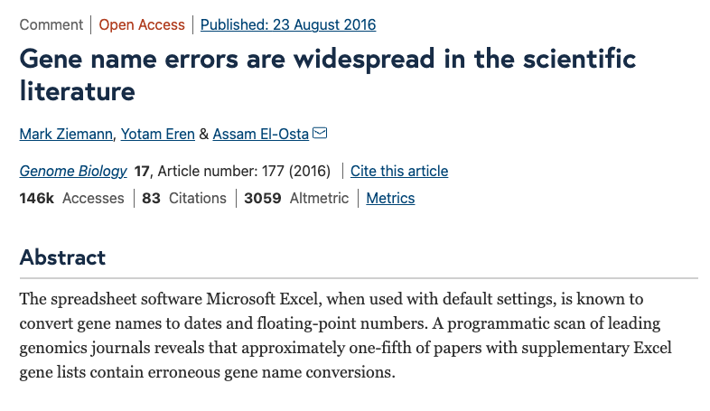
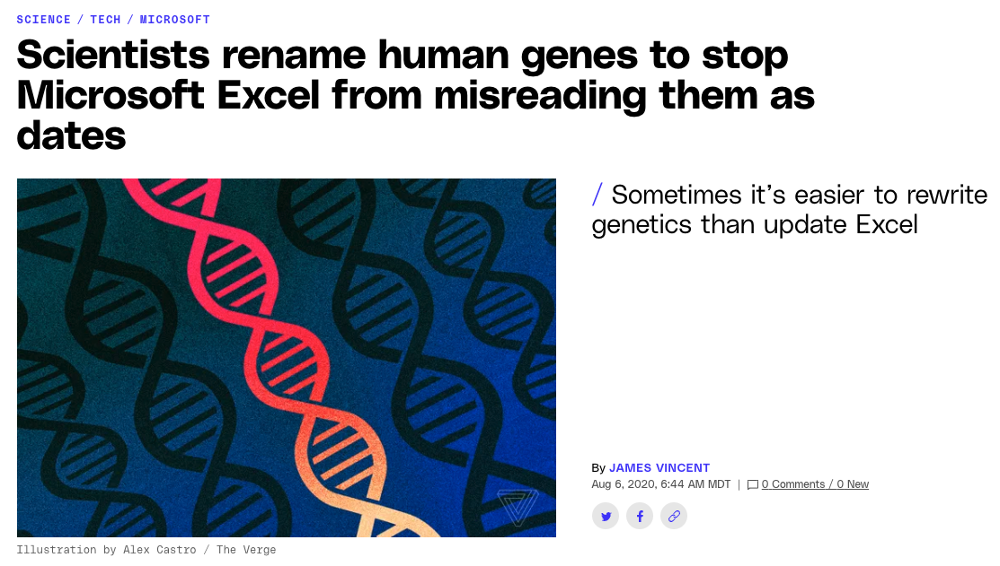

Reproducible, reusable, and shareable concepts in computational research
Sean Davis, MD, PhD
Department of Biomedical Informatics
University of Colorado | Anschutz Medical Campus
Thursday, March 9, 2023
Overview
- Reproducible research reading list (2 minutes)
- FAIR Data Principles (10 minutes)
- Spreadsheets (10 minutes)
- Hands-on exercises
Reproducible Research Reading List
(Oza et al. 2023; Cechova 2020; Michener 2015; Sandve et al. 2013)
FAIR data principles
Findable
The first step in (re)using data is to find them. Metadata and data should be easy to find for both humans and computers. Machine-readable metadata are essential for automatic discovery of datasets and services, so this is an essential component of the FAIRification process.
F1. (Meta)data are assigned a globally unique and persistent identifier
F2. Data are described with rich metadata (defined by R1 below)
F3. Metadata clearly and explicitly include the identifier of the data they describe
F4. (Meta)data are registered or indexed in a searchable resource
Accessible
Once the user finds the required data, she/he/they need to know how they can be accessed, possibly including authentication and authorisation.
A1. (Meta)data are retrievable by their identifier using a standardised communications protocol
A1.1 The protocol is open, free, and universally implementable
A1.2 The protocol allows for an authentication and authorisation procedure, where necessary
A2. Metadata are accessible, even when the data are no longer available
Interoperable
The data usually need to be integrated with other data. In addition, the data need to interoperate with applications or workflows for analysis, storage, and processing.
I2. (Meta)data use vocabularies that follow FAIR principles
I3. (Meta)data include qualified references to other (meta)data
Reusable/Reproducible
The ultimate goal of FAIR is to optimise the reuse of data. To achieve this, metadata and data should be well-described so that they can be replicated and/or combined in different settings.
R1. (Meta)data are richly described with a plurality of accurate and relevant attributes
R1.1. (Meta)data are released with a clear and accessible data usage license
Spreadsheets
Gene Names & Excel
Gene Names & Excel
 Prevalence of gene name errors in supplementary Excel files. a Percentage of published papers with supplementary gene lists in Excel files affected by gene name errors. b Increase in gene name errors by year (Ziemann, Eren, and El-Osta 2016)
Prevalence of gene name errors in supplementary Excel files. a Percentage of published papers with supplementary gene lists in Excel files affected by gene name errors. b Increase in gene name errors by year (Ziemann, Eren, and El-Osta 2016)
Excel
Reading
Microsoft Excel and Google Sheets are powerful and widely used. But there’s a right way and a wrong way to use them, data scientists say. Microsoft Excel and Google Sheets are powerful and widely used. But there’s a right way and a wrong way to use them, data scientists say. (Perkel 2022)
Questions and Discussion
Hands-on Intro to R
The data
The data was extracted from the 1974 Motor Trend US magazine, and comprises fuel consumption and 10 aspects of automobile design and performance for 32 automobiles (1973–74 models). (Henderson and Velleman 1981)
The data
A data frame with 32 observations on 11 (numeric) variables.
- mpg Miles/(US) gallon
- cyl Number of cylinders
- disp Displacement (cu.in.)
- hp Gross horsepower
- drat Rear axle ratio
- wt Weight (1000 lbs)
- qsec 1/4 mile time
- vs Engine (0 = V-shaped, 1 = straight)
- am Transmission (0 = automatic, 1 = manual)
- gear Number of forward gears
- carb Number of carburetors
The data
Exercise
- Preliminaries: login to Orchestra
- Show you around Jupyterlab
- Load a CSV (comma-separated-value) file containing the
mtcarsdataset. - Explore the dataset
- Text summaries
- Plots
Login to Orchestra
Hands-on!
References
Cechova, Monika. 2020. “Ten Simple Rules for Biologists Initiating a Collaboration with Computer Scientists.” PLoS Computational Biology 16 (10): e1008281. https://doi.org/10.1371/journal.pcbi.1008281.
Henderson, Harold V, and Paul F Velleman. 1981. “Building Multiple Regression Models Interactively.” Biometrics 37 (2): 391–411. https://doi.org/10.2307/2530428.
Michener, William K. 2015. “Ten Simple Rules for Creating a Good Data Management Plan.” PLoS Computational Biology 11 (10): e1004525. https://doi.org/10.1371/journal.pcbi.1004525.
Oza, Vishal H, Jordan H Whitlock, Elizabeth J Wilk, Angelina Uno-Antonison, Brandon Wilk, Manavalan Gajapathy, Timothy C Howton, et al. 2023. “Ten Simple Rules for Using Public Biological Data for Your Research.” PLoS Computational Biology 19 (1): e1010749. https://doi.org/10.1371/journal.pcbi.1010749.
Perkel, Jeffrey M. 2022. “Six Tips for Better Spreadsheets.” Nature 608 (7921): 229–30. https://doi.org/10.1038/d41586-022-02076-1.
Sandve, Geir Kjetil, Anton Nekrutenko, James Taylor, and Eivind Hovig. 2013. “Ten Simple Rules for Reproducible Computational Research.” PLoS Computational Biology 9 (10): e1003285. https://doi.org/10.1371/journal.pcbi.1003285.
Ziemann, Mark, Yotam Eren, and Assam El-Osta. 2016. “Gene Name Errors Are Widespread in the Scientific Literature.” Genome Biology 17 (1): 177. https://doi.org/10.1186/s13059-016-1044-7.